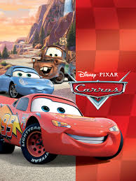
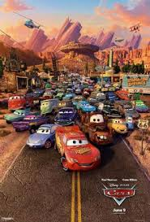
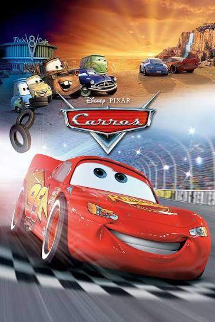
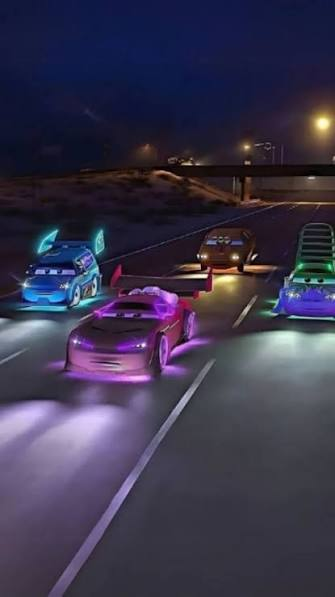
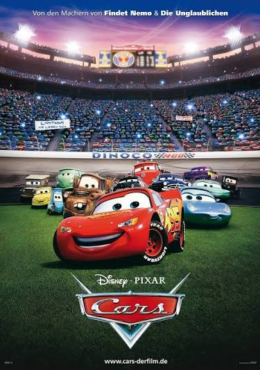

CARROS

HISTORIA
Lançado em 2006 pela Pixar, Carros acompanha Relâmpago McQueen, um carro de corrida talentoso e ambicioso que sonha em conquistar a Copa Pistão. Durante uma viagem para a Califórnia, ele acaba perdido na pequena cidade de Radiator Springs, onde precisa realizar trabalhos comunitários após causar danos à estrada local. Enquanto conhece novos amigos, como Mate, Sally e Doc Hudson, McQueen começa a descobrir que a amizade, a humildade e o respeito são muito mais importantes do que vencer corridas. O filme mistura aventura, comédia e emoção, trazendo uma mensagem sobre amadurecimento, companheirismo e o verdadeiro significado do sucesso.


BASTIDORES
A produção de Carros começou com uma viagem de John Lasseter pela famosa Route 66, nos Estados Unidos. A experiência inspirou a criação de Radiator Springs e a história de Relâmpago McQueen. Para deixar o filme mais realista, os artistas da Pixar visitaram cidades, observaram carros antigos e estudaram pistas de corrida. A equipe também pesquisou milhares de imagens e detalhes automotivos. Outro detalhe interessante é que Mater foi inspirado em uma caminhonete enferrujada encontrada em um ferro-velho. Já Doc Hudson foi baseado em um Hudson Hornet de 1951, um carro famoso nas corridas americanas.


DETALHES DOS BASTIDORES
O nome Relâmpago McQueen homenageia Glenn McQueen, animador da Pixar. Os sons dos motores foram inspirados em carros reais para deixar as corridas mais autênticas. Além disso, os artistas viajaram pela Route 66 para criar Radiator Springs, inspirando-se em cidades antigas e paisagens americanas.
CURIOSIDADES
-
Dublagem famosa: Owen Wilson foi escolhido para dar voz ao Relâmpago McQueen, trazendo seu estilo descontraído ao personagem.
-
Referência escondida: O número 95 de McQueen é uma homenagem ao ano de lançamento de Toy Story, primeiro filme da Pixar.
-
Aparição especial: O caminhão Mack faz uma referência ao filme O Iluminado durante uma cena em que seus faróis piscam de maneira assustadora.